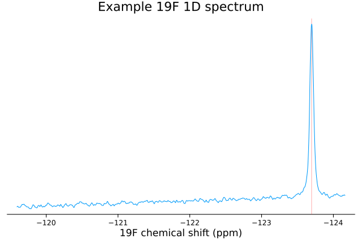

Peak Detection
NMRTools provides automated peak detection for 1D NMR spectra, allowing you to identify and analyze resonances in your data. The peak detection algorithm uses signal-to-noise ratio (SNR) filtering to distinguish true peaks from background noise.
Quick Example
spec = exampledata("1D_19F")
pks = detectpeaks(spec)Vector of 1 SimplePeak{1} objects
Index δ Intensity δfwhm
1 -123.69808278240923 23737.674377441406 0.0626986378531874
The detectpeaks function returns a vector of SimplePeak objects with information about each detected peak:
To visualize the detected peaks, simply plot them alongside the spectrum:
plot(spec)
plot!(pks)
Detected peaks are shown as a red vertical line overlaid on the spectrum.
Basic Usage
The detectpeaks function analyzes a 1D NMR spectrum and returns a vector of SimplePeak objects:
peaks = detectpeaks(spec)Each SimplePeak object contains three key properties:
intensity: The peak height (amplitude) in the spectrumδ: The chemical shift position in ppmδfwhm: The full width at half maximum (FWHM) in ppm
Adjusting Peak Detection Sensitivity
The snr_threshold parameter controls the sensitivity of peak detection by setting the minimum signal-to-noise ratio required for a peak to be detected:
# Detect only very strong peaks (SNR > 20)
peaks_strong = detectpeaks(spec; snr_threshold=20)
# More sensitive detection (SNR > 5)
peaks_sensitive = detectpeaks(spec; snr_threshold=5)Accessing Individual Peak Properties
You can access properties of individual peaks:
julia> peak = peaks[1]
SimplePeak{1} with intensity=23737.674377441406, δ=-123.69808278240923, δfwhm=0.0626986378531874
julia> peak.δ
-123.69808278240923
julia> peak.intensity
23737.674377441406
julia> peak.δfwhm
0.0626986378531874Sorting Peaks
You can sort peaks by various properties:
# Sort by intensity (strongest first)
sorted_by_intensity = sort(peaks; by=p -> p.intensity, rev=true)
# Sort by chemical shift (left to right)
sorted_by_shift = sort(peaks; by=p -> p.δ, rev=true)See Also
- Plotting Tutorial: Learn more about visualizing NMR data
- Working with NMR Data: Data processing and manipulation
- Utilities: Additional analysis tools